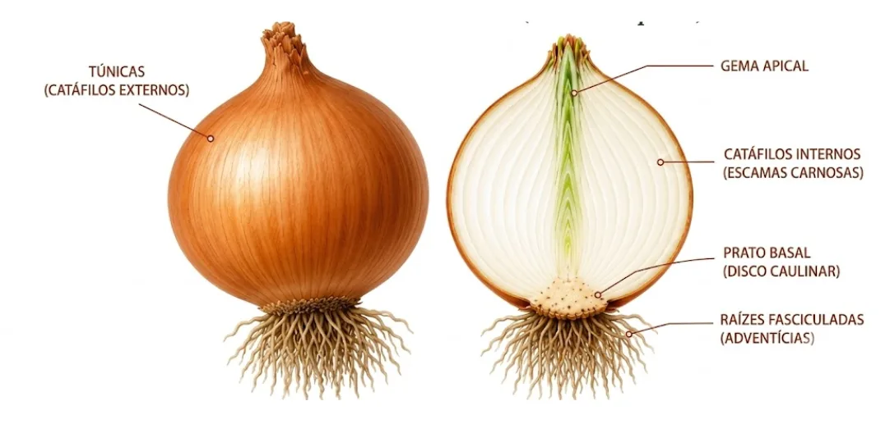
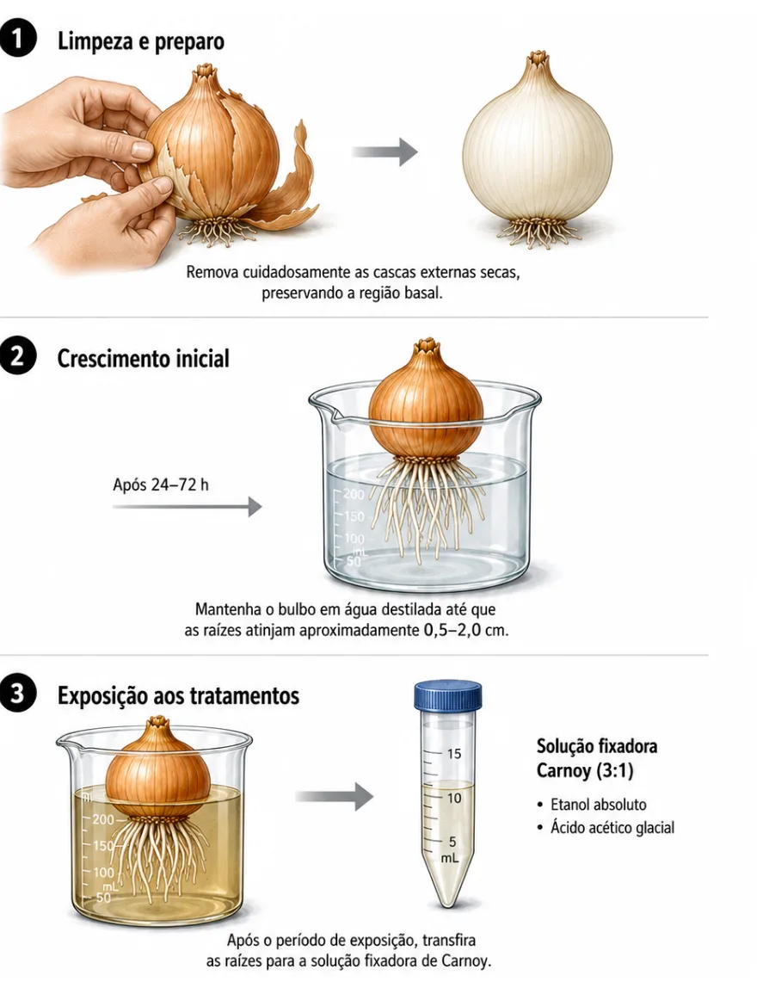
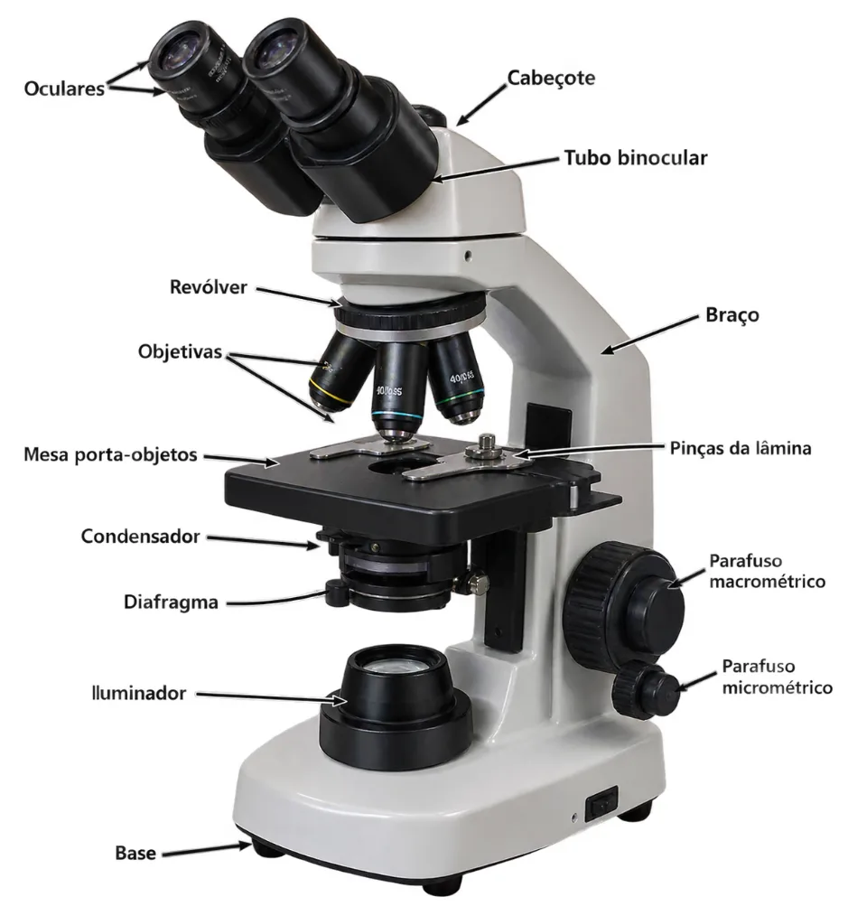

Guia experimental
Bioensaio de Allium cepa em testes de citogenotoxicidade
Protocolo ilustrado, cronograma e atlas das principais anormalidades cromossômicas e nucleares, com fotos reais de microscopia.
Apresentação
Este guia é resultado de um trabalho de iniciação científica desenvolvido com o apoio do Conselho Nacional de Desenvolvimento Científico e Tecnológico (CNPq), reunindo os resultados da pesquisa “Indução de anormalidades cromossômicas em Allium cepa L. por agentes tóxicos”. O material foi elaborado pela graduanda em Biologia Ana Ingrid Felix da Silva, sob orientação do Prof. Dr. Ivandilson Pessoa Pinto de Menezes e coorientação do Prof. Me. Alex de Oliveira Silva, com o objetivo de transformar conhecimentos científicos em um recurso didático acessível para o ensino de citogenética e toxicologia ambiental.
Ler apresentação completa
A elaboração deste guia busca suprir a escassez de materiais didáticos voltados à identificação e interpretação de alterações citogenéticas em bioensaios com Allium cepa, facilitando a compreensão das anormalidades nucleares e cromossômicas observadas em análises microscópicas. Dessa forma, o material converte resultados de pesquisa em um instrumento pedagógico ilustrado, contribuindo para a realização de experimentos e para a compreensão dos efeitos de agentes com potencial citotóxico e genotóxico.
Sua fundamentação baseia-se em protocolos consolidados na literatura científica, especialmente nos estudos de Fiskesjö (1988), Rank e Nielsen (1998), Leme e Marin-Morales (2009) e Yadav e Kumar (2010), que reconhecem Allium cepa como um modelo eficiente para a detecção de efeitos citotóxicos e genotóxicos devido à elevada sensibilidade das células meristemáticas radiculares e à facilidade de observação das alterações cromossômicas.
Ao reunir conceitos, protocolos e exemplos ilustrativos das principais anormalidades cromossômicas, este guia oferece suporte às atividades laboratoriais, fortalece a formação científica ao integrar teoria e prática e contribui para o desenvolvimento da autonomia investigativa dos estudantes. Espera-se, ainda, que a publicação subsidie atividades de ensino e pesquisa, estimulando novos estudos em citogenética vegetal, biomonitoramento e toxicologia ambiental, reafirmando o compromisso com a produção científica e a educação de qualidade.
Contextualização
O aumento das atividades industriais e agrícolas tem intensificado a liberação de compostos químicos no ambiente, muitos dos quais apresentam potencial genotóxico e podem comprometer a integridade genética dos organismos (Leme; Marin-Morales, 2009). O acúmulo desses danos pode resultar em anormalidades cromossômicas que afetam o funcionamento celular e a estabilidade do material genético.
A identificação dessas alterações é realizada por meio de biomarcadores citogenéticos, como o índice mitótico, a formação de micronúcleos e diferentes anormalidades cromossômicas, amplamente utilizados em estudos de genotoxicidade. Entretanto, ainda há escassez de materiais didáticos que sistematizem, de forma clara e acessível, a aplicação do teste com Allium cepa.
Este guia foi elaborado com base no método proposto por Albert Levan, referência na citogenética moderna. O teste de Allium cepa destaca-se como uma ferramenta confiável para a avaliação da genotoxicidade, citotoxicidade e mutagenicidade, sendo amplamente empregado como bioindicador ambiental (Levan, 1938). Sua utilização é favorecida pelo baixo custo, facilidade de cultivo, presença de cromossomos grandes e pela ausência das implicações éticas relacionadas ao uso de animais em experimentação (Fiskesjö, 1985; Tedesco; Laughinghouse, 2012).
1 Sistema modelo vegetal

Morfologia: a cebola apresenta uma morfologia característica, composta por estruturas especializadas que desempenham funções relacionadas à sustentação, absorção de água e nutrientes, crescimento vegetativo e armazenamento de reservas. O bulbo, principal órgão de reserva da planta, é formado por folhas modificadas denominadas catáfilos, organizadas sobre um caule reduzido conhecido como prato basal ou disco caulinar. Além disso, a espécie possui sistema radicular fasciculado, folhas fistulosas, pseudocaule e gema apical (Manfron; Garcia; Andriolo, 1992).
2 Experimento
O teste tem como objetivo identificar possíveis efeitos citotóxicos e genotóxicos em células meristemáticas de raízes de Allium cepa, após exposição a diferentes substâncias químicas. A análise é realizada por meio da observação das divisões celulares nas raízes, permitindo detectar alterações no ciclo celular e anormalidades cromossômicas indicativas de danos ao material genético.
Materiais
Marque o que já separou — o progresso fica salvo neste navegador.
Procedimento experimental
Enraizamento
O enraizamento consiste na indução do crescimento de raízes na base dos bulbos, etapa essencial para obtenção de células em divisão. Devem ser selecionados bulbos íntegros, com remoção cuidadosa das camadas externas sem danificar a base. Em seguida, colocar em água destilada, mantendo apenas a base em contato, sob temperatura de 20–25 °C e luz difusa. Trocar a água diariamente. O processo dura de 24 a 72 horas, sendo ideais raízes entre 0,5 e 2,0 cm (Fiskesjö, 1985).
Organização experimental
Os bulbos previamente enraizados devem ser distribuídos de forma aleatória e independente entre os grupos experimentais. O experimento deve incluir um controle negativo (água destilada ou declorada), que representa a condição normal; um controle positivo, contendo uma substância de efeito citotóxico e genotóxico conhecido, utilizado para validar o bioensaio; e um ou mais tratamentos teste, nos quais os bulbos são expostos à substância em avaliação. Recomenda-se a utilização de, no mínimo, três réplicas independentes por grupo experimental.
| Substância | Concentração | Referência |
|---|---|---|
| Dimetilsulfóxido (DMSO) | 0,1% | Yildiz et al. (2009) |
| Sulfato de cobre (CuSO₄·5H₂O) | 1,5 mg/L | Finkler et al. (2022) |
| Glifosato | 5 mg/L, 0,65 mg/L e 0,065 mg/L | Sabeen et al. (2020) |
| Nanopartículas | Conforme o tipo de nanopartícula empregada | Scherer et al. (2019) |
Montagem experimental
Sempre que possível, devem ser realizadas repetições experimentais, visando aumentar a confiabilidade dos resultados.
Passo a passo

Fixação das raízes e preparação de lâminas
Figura 4 — Fixação das raízes e preparação de lâminas. Use as setas do teclado para navegar.
Tempos de HCl e safranina
| Tratamento | Tempo no HCl (1 M) | Tempo na safranina |
|---|---|---|
| Controle negativo (água destilada) | 6–7 minutos | 1–2 minutos |
| Controle positivo (sulfato de cobre – CuSO₄) | 5 minutos | 1 minuto |
| Glifosato | 4–5 minutos | 1 minuto |
| DMSO | 4–5 minutos | 1 minuto |
| Nanopartículas | 5 minutos | 1 minuto |
Cronômetro de bancada
Escolha o tratamento e a etapa: o cronômetro avisa quando entrar na janela de tempo indicada.
Pronto para iniciar.
Cronograma experimental
- Dia 0
Preparação e montagem
Preparação dos materiais, soluções e montagem do experimento.
- Dias 1 a 3
Enraizamento dos bulbos
Os bulbos permanecem em contato com água destilada para enraizamento.
- 24 a 96 h
Exposição às soluções-teste
Após o enraizamento, os bulbos são transferidos para as soluções-teste pelo período de 24 a 96 horas.
- Dia 2 ou 3 após a exposição
Fixação das raízes
As raízes são retiradas cuidadosamente com pinça e transferidas para a solução fixadora de Carnoy (3:1, etanol absoluto e ácido acético). A fixação ocorre por 12 a 24 horas sob refrigeração. Os recipientes devem ser identificados com grupo, concentração e data do experimento.
Figura 6 — Cronograma experimental.
3 Análise microscópica
O microscópio óptico é fundamental para a observação de estruturas que não podem ser visualizadas a olho nu. Por meio da ampliação proporcionada por suas lentes, permite analisar células, tecidos e microrganismos (Murphy; Davidson, 2012).
No teste de Allium cepa, as células da região meristemática são analisadas utilizando inicialmente a objetiva de menor aumento para localizar a região de interesse e, posteriormente, a objetiva de 40× para a observação detalhada.
A identificação das fases mitóticas possibilita o cálculo do Índice Mitótico (IM), indicador da atividade proliferativa das células — veja a calculadora de índices.

Fases da divisão celular
Durante a análise podem ser identificadas as principais fases da mitose — prófase, metáfase, anáfase e telófase — além da interfase, período que antecede a divisão celular. A identificação correta dessas fases é fundamental para a determinação do Índice Mitótico.
Figura 7 — Principais fases da divisão celular. Fotos de Allium cepa; a seta indica a célula de interesse.
Anormalidades cromossômicas e nucleares
As anormalidades cromossômicas são alterações estruturais ou funcionais que surgem durante o ciclo celular em consequência da ação de substâncias tóxicas sobre o DNA ou sobre o fuso mitótico. Funcionam como biomarcadores citogenéticos e, segundo Leme e Marin-Morales (2009), podem ser classificadas em:
Aneugênicas
Interferem na distribuição dos cromossomos durante a divisão, geralmente por alterações no fuso mitótico, gerando segregação irregular.
Clastogênicas
Causadas por quebras na estrutura dos cromossomos: fragmentos, pontes, cromossomos em anel e micronúcleos. Indicam efeito genotóxico.
Nucleares
Alteram forma, estrutura ou número dos núcleos, observadas principalmente em interfase.
Figuras 8 e 9 — Anormalidades aneugênicas, clastogênicas e nucleares. Fonte: elaborado pelos autores.
Teste seus conhecimentos
O que esta célula apresenta?
Leve o guia completo
Folheie todas as páginas no site ou baixe o PDF para usar em sala e na bancada.